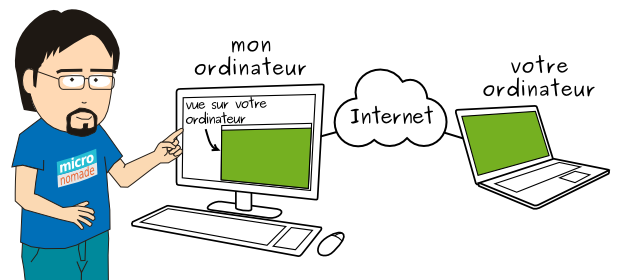

Intervention à distance
Selon votre besoin, une intervention sur place n’est pas forcément nécessaire. Mais vous questionner et vous guider par téléphone est très vite fastidieux, pour vous et moi. Une solution : l’intervention informatique à distance (ou télémaintenance).
La télémaintenance, qu’est-ce que c’est ?
Grâce à un programme spécialisé, vous pouvez me donner accès, via Internet, à votre ordinateur. Ainsi, je peux voir ce qui se passe sur votre ordinateur et agir sur lui, comme si j’étais devant l’écran.
Deux éléments sont nécessaires pour permettre la télémaintenance :
- votre ordinateur doit disposé d’une connexion Internet fonctionnelle ;
- vous devez avoir installé le logiciel de télémaintenance (je vous guide par mail ou téléphone).
Le logiciel est sécurisé : il utilise un identifiant et un mot de passe pour garantir que personne d’autre que moi ne se connecte à votre ordinateur. Une fois mon intervention terminée, le logiciel est arrêté, soit par vous, soit par moi et aucune connexion n’est plus possible.
Quels sont les avantages de la télémaintenance ?
- Permet d’économiser du temps et des frais de déplacement
- En voyant directement ce qui vous pose problème, je suis plus efficace que par le téléphone dans mon assistance, mon diagnostic et mon dépannage
- Une fois le connexion établie, vous laisse libre de continuer vos occupations sans forcément rester près de l’ordinateu
Quand et comment organiser une télémaintenance ?
Un échange est indispensable, par téléphone ou par mail, pour déterminer si la télémaintenance est appropriée à votre besoin et pour planifier l’intervention. L’intervention peut se faire très rapidement, selon ma disponibilité à ce moment-là.
Dans le cas où une intervention à distance ne serait pas possible techniquement (pas de connexion à Internet, par exemple) ou si elle ne permet pas de résoudre le problème, nous pouvons convenir d’une intervention sur site.
Découvrez mes tarifs